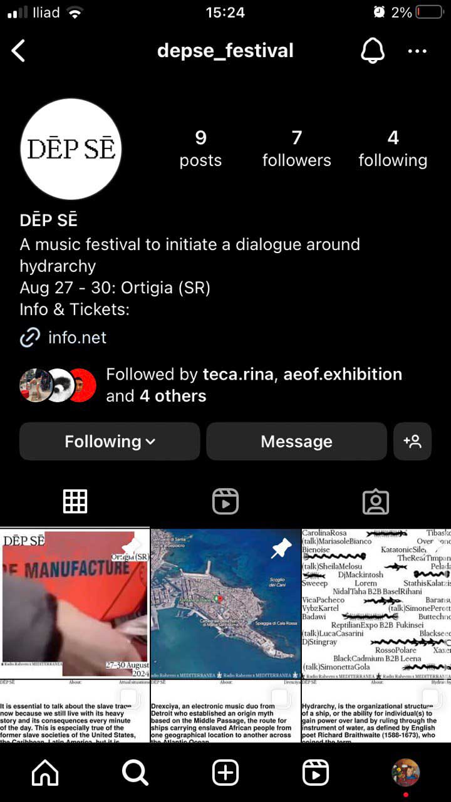
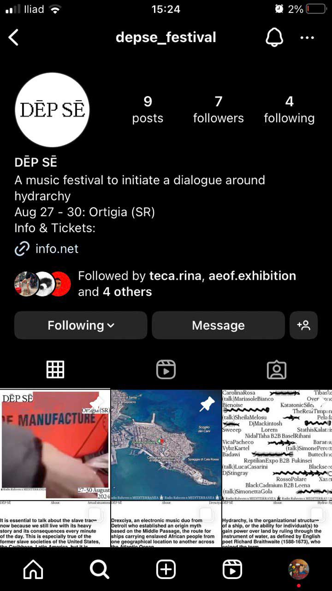

One Stroke
One Stroke explores the evolution of monolinear and vector fonts, tracing their transformation from industrial tools to objects of visual experimentation. It examines the transition from technical instrument to expressive resource, focusing on the design methodologies applied in modern typeface renditions and how these experiences converge in the creation of an online type tool capable of extracting a single-line vector from any typeface. The book is accompanied by a plexiglass piece milled with a composition generated through the tool, serving as a three-dimensional specimen produced with a technique akin to those analyzed in the book.


 
